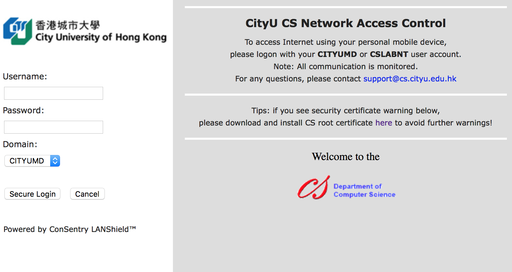

Published on July 14, 2018
Automate Network Access Control Login
This project saves your effort from repetitive jobs.
Motivation
Every day before we can access the internet via CS wired network, a login form needs to be submitted in the browser. Even if you can use the auto-fill function of Safari or Chrome to assist with the login process, it is still tedious for you to click that Secure Login button and to wait few seconds.
We want the network login process to happen automatically.

Features
- Automate login process for CityU CS Network Access Control. No need to click a button for submit form.
- The logout.py snippet can help you logout if you accidentally lost the access to the network logout button. (Most of the time, you don't need to logout at all.)
Requirements
For macOS users, just follow the instructions in this file. For Linux users, 1. in Installation - Step 3 you need to modify driver download link to download the correct driver for Linux, and 2. in Usage - Step 2, you need to use a .sh file instead of .command.)
- macOS or Linux
- python3.6
Installation
Step 1: Clone the project to a suitable location, git clone https://github.com/PharrellWANG/auto-login.git. You will need to keep this project in your file system. To uninstall it, just delete the project.
Step 1: pip install selenium
Step 2: brew instal jq
Step 3: Pick one webdriver, download and install it. If you use Chrome driver, login.py can be directly invoked; otherwise, you need to modify line 9 in login.py to use other drivers.
- For Chrome: download and install chromedriver, wget https://chromedriver.storage.googleapis.com/2.40/chromedriver_mac64.zip && unzip chromedriver_mac64.zip && sudo mv chromedriver /usr/local/bin
- For Firefox: download and install geckodriver, wget https://github.com/mozilla/geckodriver/releases/download/v0.21.0/geckodriver-v0.21.0-macos.tar.gz && tar -zxvf geckodriver-v0.21.0-macos.tar.gz && chmod +x geckodriver && sudo mv geckodriver /usr/local/bin
Usage
Step 1: in project root directory, touch credential.txt, then open credential.txt with your favorite editor, type your eid in the first line, press enter, then type your password in the second line, save it. login.py will need to fetch your credential from this file.
Step 2: Make command file executable: chmod +x auto-login.command
Step 3: Automatically execute it upon reboot: crontab -e, then add @reboot /path/to/auto-login.command
Note: You need to provide the correct path in Step 3 right above.
Outcome
Every time rebooting the computer, you can directly access www.google.com.hk. There's no need to submit a login form any more.
Caveat
Please make sure to keep your credential.txt secretly.
Author
Pharrell Z.X WANG (wzxnuaa@gmail.com)
License
MIT